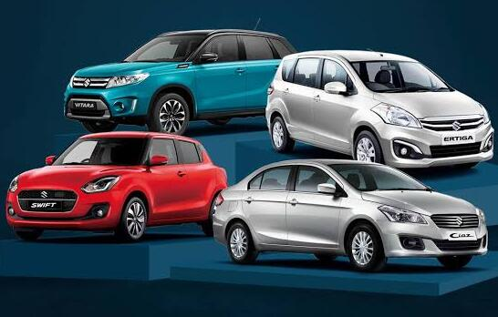

Suzuki Swift
Es un automóvil compacto utilizado principalmente para movilizarse por la ciudad.
Conoce más sobre la marca Suzuki.
Suzuki es una empresa japonesa fundada en 1909 por Michio Suzuki.
La empresa comenzó fabricando telares y posteriormente desarrolló motocicletas, automóviles y otros vehículos.

Suzuki cuenta con diferentes modelos de vehículos para distintas necesidades.
Es un automóvil compacto utilizado principalmente para movilizarse por la ciudad.
Es un vehículo SUV que ofrece comodidad para desplazamientos urbanos y viajes.
Es un vehículo todoterreno conocido por su tamaño compacto y capacidad para recorrer diferentes caminos.
Los vehículos Suzuki son conocidos por ofrecer modelos compactos, prácticos y de diferentes tamaños.
Algunos modelos están diseñados para la ciudad, mientras que otros permiten realizar recorridos por distintos tipos de terreno.